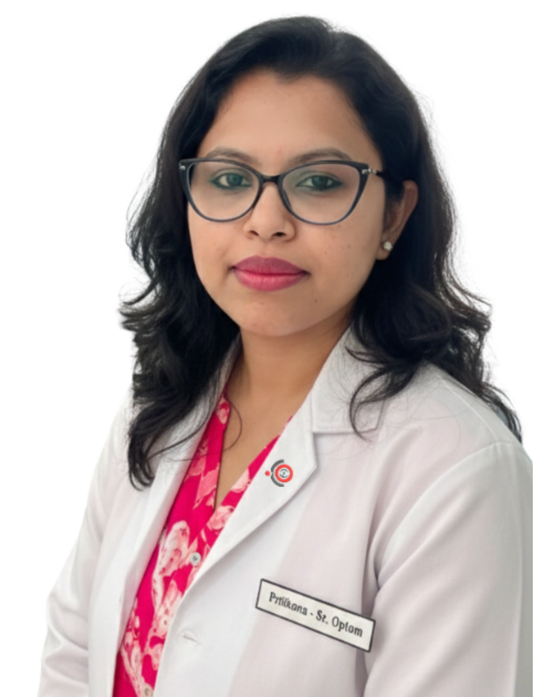
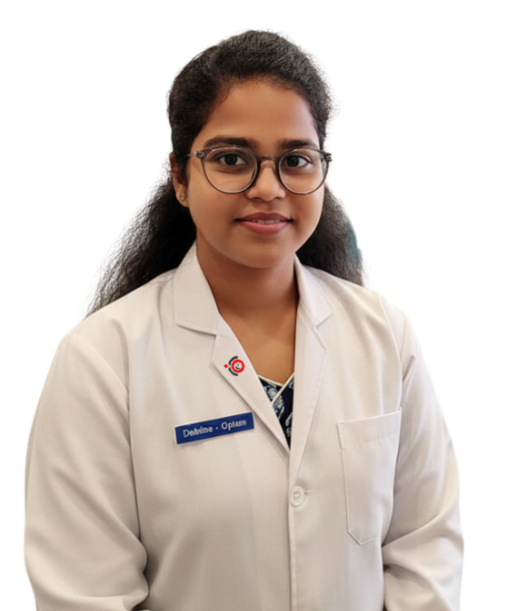
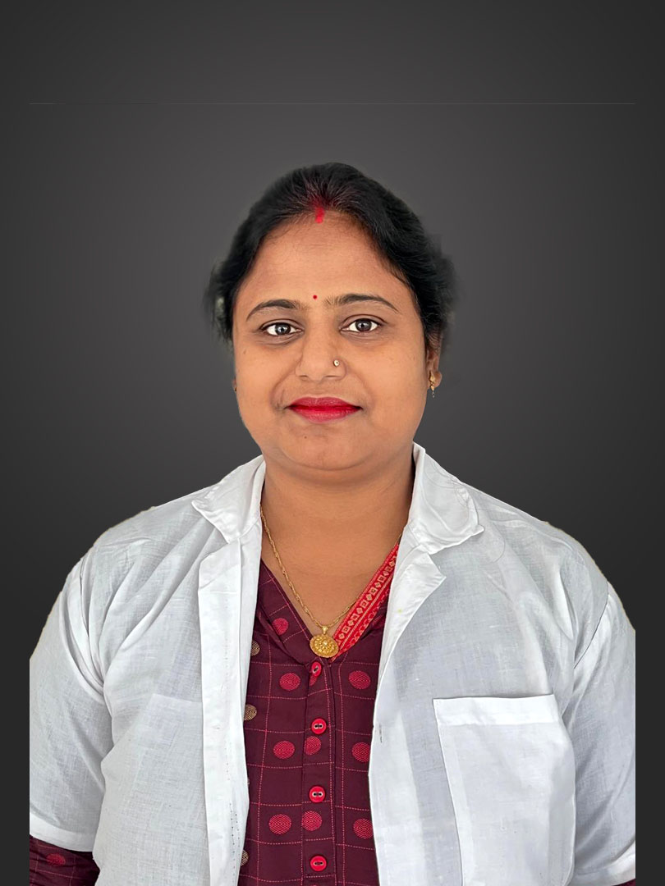
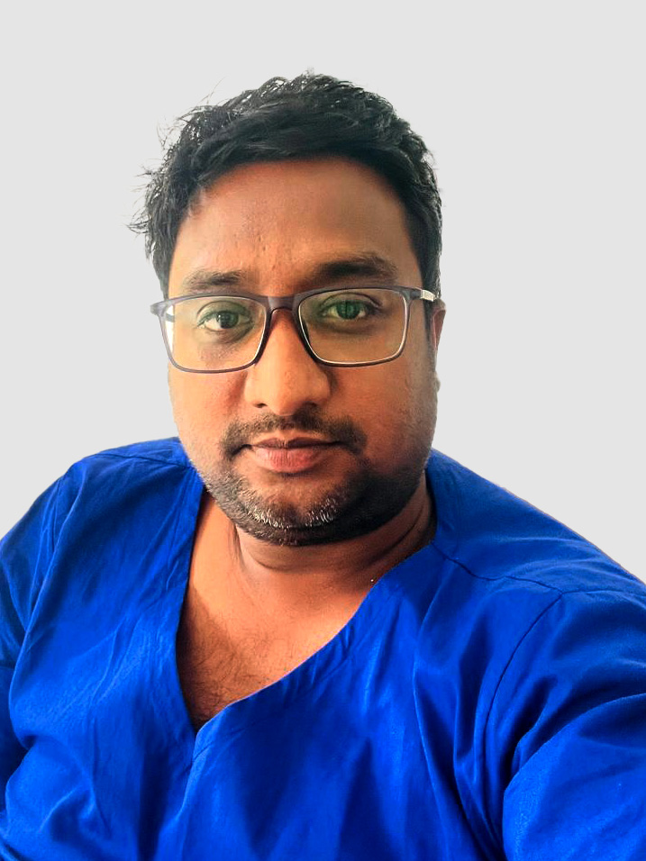

A multidisciplinary team of qualified ophthalmologists, optometrists, and vision care professionals committed to restoring and protecting your sight.
Dr. Chayan Hira established Dr. Hira Eyecare & Diagnostic Centre in 2025 with a mission to provide world-class eye care to the Nadia district. As a specialist ophthalmologist, he completed approximately 2,500 microsurgeries (SICS + PHACO) during his postgraduate training, including solo performance of 22 SICS surgeries.

D. Optometry – University of Kalyani
Intern – R. G. Kar Medical College & Hospital

D. Optometry – Deben Mahata Govt. Medical College, Purulia
Internship – Deben Mahata GMC
Trained – Susrut Eye Foundation & Research Centre

Front Desk & Patient Coordination

Operation Theatre & Floor Operations
Finance & Visual Communication
Plan your visit — each doctor is available on specific days. Walk-ins welcome, appointments preferred.
| Doctor | Designation | Consultation Day |
|---|---|---|
| Dr. Chayan Hira | Founder & Chief Ophthalmologist | All Days |
| Dr. Arko Dip Chakraborty | Consultant Ophthalmologist | Thursday |
| Dr. Sandipan Rajak | Senior Consultant Ophthalmologist | Saturday (from 11 AM) |
| Dr. Prasun Kumar Mondal | Cataract & Retina Surgeon | Saturday |
| Dr. Jayanta Thakur | Consultant Ophthalmologist & Retina Specialist | Wednesday |
| Dr. Rakesh Biswas | Consultant Ophthalmologist | Tuesday |